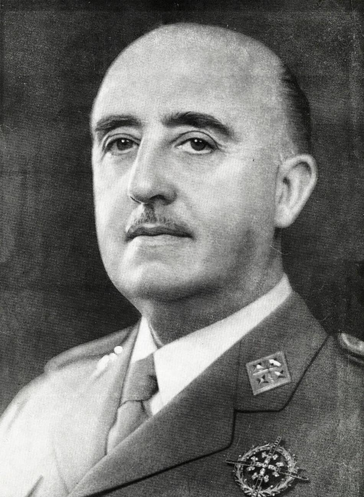

Franco muere a los 82 años tras 36 de gobierno
Arias Navarro dio la noticia por televisión con la voz quebrada. El príncipe Juan Carlos será proclamado Rey el sábado ante las Cortes, según lo previsto. El país entra en un tiempo que nadie sabe nombrar todavía.

A las diez de la mañana, la televisión interrumpió su programación y apareció en pantalla el presidente del Gobierno, don Carlos Arias Navarro, con un papel tembloroso entre las manos y la voz quebrada: «Españoles... Franco ha muerto». El general Francisco Franco Bahamonde había fallecido de madrugada en la Ciudad Sanitaria La Paz, a los ochenta y dos años, tras semanas de una agonía que los partes médicos fueron describiendo con crudeza creciente. A media mañana, las emisoras solo daban música grave, los comercios echaban el cierre y las banderas descendían a media asta. Se ha decretado luto oficial de treinta días.
El desenlace no sorprende a nadie y sin embargo deja al país en suspenso. Desde mediados de octubre, España ha seguido día a día un boletín clínico convertido en literatura del desgaste: infartos, hemorragias, operaciones sucesivas, máquinas que suplían órganos vencidos. La muerte se produjo pasadas las cuatro y media de la madrugada, según el parte oficial. El cadáver será trasladado al Palacio de Oriente, donde mañana quedará instalada la capilla ardiente; esta misma noche comenzaban a formarse las primeras colas en los alrededores, con termos, mantas y sillas plegables, para desfilar ante el féretro del hombre que ha gobernado España durante treinta y seis años.
La maquinaria institucional prevista se ha puesto en marcha con puntualidad. El Consejo de Regencia asume interinamente la Jefatura del Estado, y el príncipe don Juan Carlos de Borbón, designado sucesor a título de Rey en 1969, será proclamado el sábado ante las Cortes, según lo previsto. Los telegramas de pésame de las cancillerías se cruzan con las especulaciones de la prensa extranjera, que llena desde hace semanas los hoteles de Madrid, sobre lo que venga después. Dentro del país, unos hablan de continuidad y otros, con más cautela que voz, de apertura; ambas palabras esperan, como todo lo demás, a los acontecimientos.
El país que hoy calla no es uno solo. En las inmediaciones del Palacio de Oriente hay lágrimas sinceras, mujeres enlutadas, hombres que hablan del difunto con la devoción de media vida. Y cuentan también los comerciantes, con discreción de trastienda, que en algunas tiendas se han despachado hoy más botellas de champán que en vísperas de Nochevieja, compradas sin comentarios y envueltas deprisa. Ambos países han pasado el día bajo el mismo cielo gris, cruzándose en las mismas aceras, sin hablarse. Los cafés estaban llenos y extrañamente silenciosos; pocas veces tanta gente junta hizo tan poco ruido.
Este diario no despide hoy a un hombre: registra el final de una época que ha durado treinta y seis años, más de la mitad de la vida de la mayoría de los españoles, que no han conocido otro jefe del Estado. Lo que venga no lo sabe nadie, aunque muchos finjan saberlo. El sábado jurará un rey joven al que el país conoce poco; las leyes prevén los trámites, pero ninguna ley prevé el ánimo de un pueblo. España se acuesta esta noche en el mismo mapa y en otro país, y amanecerá preguntándose, por primera vez en décadas, qué será de mañana.